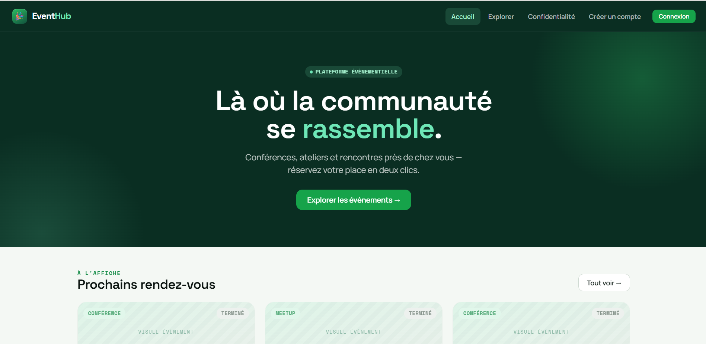

012026

EventHub
Plateforme de gestion d'évènements avec workflow de validation et sécurité applicative.
Event management platform with a moderation workflow and application-level security.
SymfonyReactMySQLJWTDockerGitHub Actions
Le problème
The problem
L'organisation d'évènements — conférences, ateliers, meetups — disperse la publication, la validation et les inscriptions entre plusieurs outils. Il fallait une plateforme unique avec un circuit de modération clair entre organisateurs et administrateur.
Running events — conferences, workshops, meetups — scatters publishing, approval and signups across several tools. It needed one platform with a clear moderation path between organisers and admin.
Approche
Approach
- Modélisation Merise et API REST Symfony sécurisée par authentification JWT
- Workflow à états (brouillon → en attente → publié / refusé) avec contrôle d'accès fin via un Voter
- Frontend React consommant l'API : capacité en temps réel, badges de statut
- API météo externe tolérante aux pannes (dégradation silencieuse)
- Tests automatisés PHPUnit + Vitest exécutés à chaque push
- Conteneurisation complète via Docker Compose
- Merise data modelling and a Symfony REST API secured with JWT auth
- State workflow (draft → pending → published / rejected) with fine-grained access control via a Voter
- React frontend on the API: live capacity, status badges
- External weather API with fault tolerance (silent degradation)
- Automated PHPUnit + Vitest suite running on every push
- Full containerisation with Docker Compose
Résultats
Results
- 26 tests automatisés (back + front)
- Pipeline CI/CD GitHub Actions verte
- Conformité RGPD : droit à l'oubli, anonymisation
- 0 vulnérabilité de sécurité (audit npm)
- 26 automated tests (back + front)
- Green GitHub Actions CI/CD pipeline
- GDPR compliance: right to erasure, anonymisation
- 0 security vulnerabilities (npm audit)